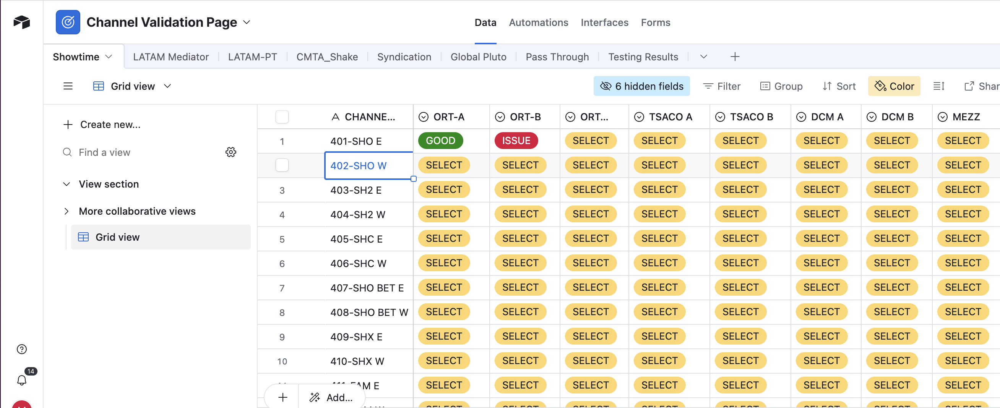

One of my primary responsibilities as an intern at Paramount is ensuring the seamless transmission of broadcast channels across a wide portfolio of networks, including CBS, MTV, Showtime, Comedy Central, Nickelodeon, and Pluto TV. A key part of this role involves validating each channel’s audio and video streams, including alternate language tracks, to confirm that all broadcast paths are fully functional and meet quality standards.
Within the facility, we utilize a space known as the PRISM room—a central monitoring hub equipped with dozens of screens displaying live feeds from across our channel lineup. During validations, I use a structured spreadsheet to systematically log the status of each feed, which is essential for identifying potential issues. When a problem is detected, I document detailed notes outlining the nature and specifics of the anomaly.
An additional layer of monitoring involves managing "penalties"—situations where a channel experiences prolonged loss of audio or video, triggering an alert that places the channel into what we call the “penalty box.” When this happens, part of the process is opening and assessing the channel to determine whether the issue is critical. Often, it’s something benign, like the closing credits of a movie or a promotional graphic, but close attention is required to ensure it doesn’t develop into a more serious outage. To facilitate this process, we use a platform called VistaLINK, which allows for targeted monitoring of any broadcast feed and its associated paths. When further investigation is needed, we use a program called Mediaproxy, which enables us to review past footage from channels by timestamp. This feature is crucial for validating whether an alert reflects a legitimate issue or a false alarm. The diagram below illustrates the signal path for the Showtime channels.
Another common issue we monitor is visual distortion caused by bitrate drops, which can affect individual channels or entire networks. To diagnose these, we rely on Medius, a platform that tracks historical bitrate data across all paths. This tool helps us determine whether a bitrate fluctuation is an isolated incident or indicative of a broader technical problem.
A current project I’ve been supporting involves consolidating two Paramount facilities in Hauppauge: the NOC and CCC buildings. With the NOC building set to be decommissioned by December 2025, we are actively migrating all associated channels to the CCC. This process involves rigorous testing of each channel’s video output and audio tracks. The goal is to ensure that the feeds from the NOC function properly at the CCC so the two buildings can successfully merge.
Overall, channel monitoring and validation has been one of the most rewarding aspects of my internship. It has deepened my understanding of the broadcast process from a technical perspective and strengthened my ability to identify genuine issues in these environments.
Another key component of this internship has been developing and managing databases using Airtable, a versatile cloud-based platform that supports real-time collaboration and data organization. Leveraging Airtable has allowed me to stay highly organized and efficient while performing various tasks, particularly during the channel validation process.
As part of this process, I created a reusable, automated table designed to track the status of each channel and its corresponding signal paths. The table includes selectable status options—“GOOD” for fully functional paths and “ISSUE” for any detected problems—along with designated fields for entering detailed notes on the nature of any technical issues.
Once the validation process is complete for all channels, a built-in command labeled “WIPE” resets the table, enabling it to be reused daily without needing to recreate or manually clear the data. This automation significantly improves workflow efficiency and ensures consistency in daily monitoring procedures.
Learning to effectively utilize Airtable has been one of the essential skills I’ve developed during my time at Paramount. It has enhanced my ability to manage complex datasets, streamline processes, and maintain clear documentation—capabilities that are vital in an industry where the volume of technical information is both high and constantly evolving. I believe this skill set will be highly valuable in any future professional setting, especially in broadcast and media environments where data accuracy and operational organization are critical.